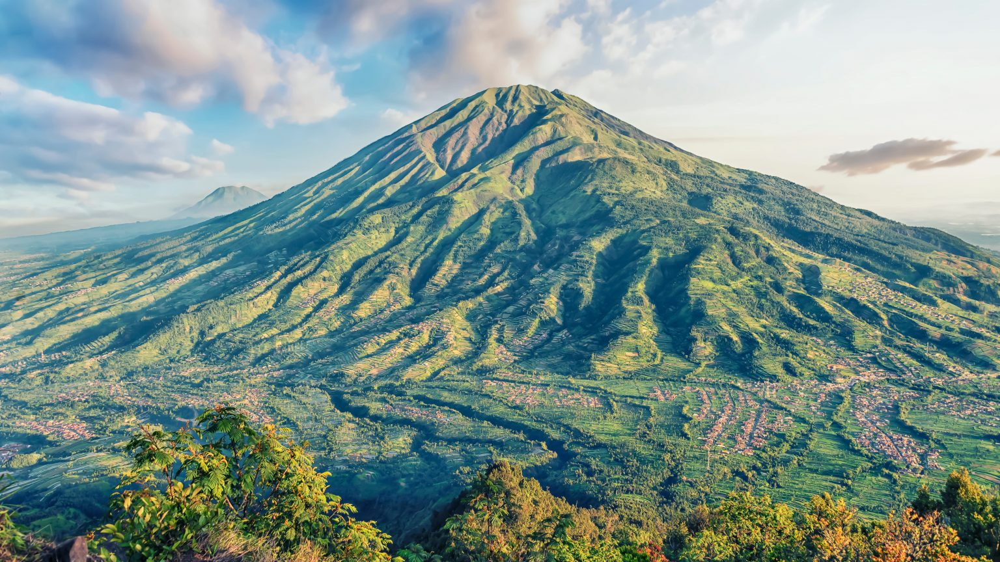
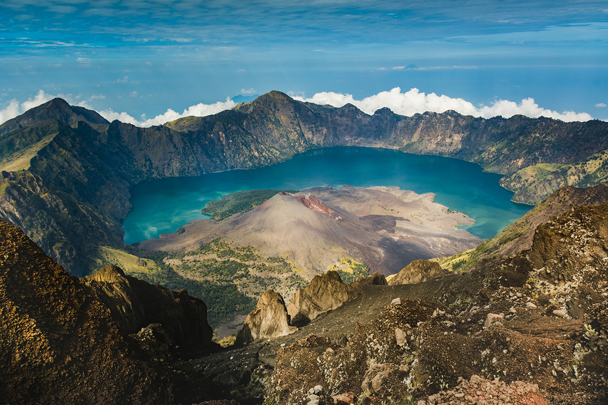
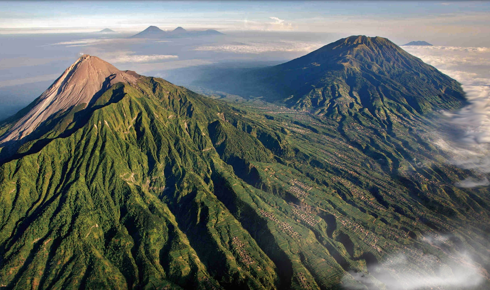
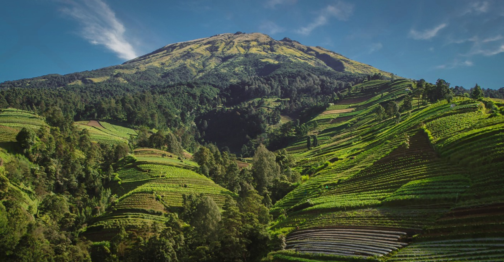
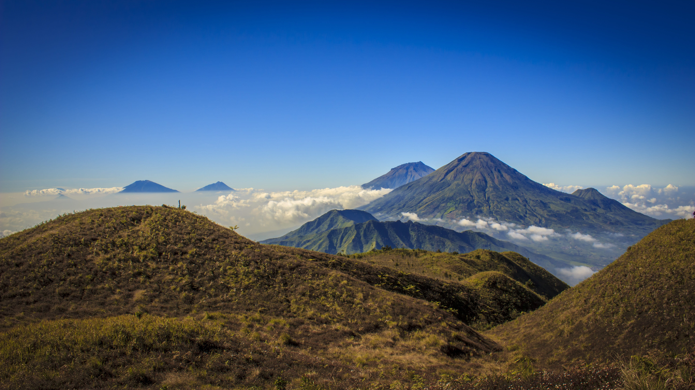

Atap Nusantara menyediakan informasi lengkap tentang berbagai gunung
yang dapat didaki di Indonesia. Pengguna bisa menemukan detail lokasi,
tingkat kesulitan, serta tips pendakian untuk setiap gunung,
memudahkan para pendaki merencanakan petualangan mereka.

Gunung Merbabu
Merbabu dikenal karena jalur pendakiannya yang menantang dan
pemandangannya yang menakjubkan.
Lokasi: Jawa Timur

Gunung Rinjani
Rinjani merupakan gunung tertinggi kedua di Indonesia.
Lokasi: Nusa Tenggara Barat

Gunung Merapi
Merapi merupakan salah satu gunung berapi paling aktif di dunia
yang terus mengeluarkan material vulkanik.
Lokasi: Yogyakarta, Jawa Tengah

Gunung Sumbing
Sumbing adalah gunung tertinggi kedua di Pulau Jawa setelah
Gunung Semeru
Lokasi: Wonosobo, Jawa Tengah

Gunung Prau
Puncak Gunung Prau menawarkan panorama luar biasa serta hamparan
savana yang luas.